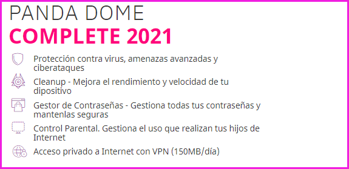

MEJORES-FIREWALL-SOFTWARE
Seguridad
Los siguientes firewalls que mencionaremos son firewalls que tienen caracteristicas importantes para estar etre los mejores firewall de software del mercado puedes decargar cualquiera ya que otorgamos lo enlaces oficilaes para su de descarga si el usuario no usa ningun cortafuegos.Todos los qu mencionaremos son para sistema operativos Windows existenalgunos que tiene versiones de Linux.Personalmente nuestro equipos considera que Panda es el mejor ya que tiene muchisimas herramientas de administración
Sophos UTM Essential Firewall
Sophos UTM es u software que ofrece funciones de seguridad básicas diseñadas para ayudarle a proteger cualquier red. La version Essential Firewall esta dedicada a las empresas ya que Si, en un momento dado, el entorno empresarial exige una ampliación de la protección, Essential Firewall Edition puede actualizarse de forma flexible con la protección completa para redes, Internet, correo electrónico y aplicaciones web de Sophos UTM Professional Edition.
- Protección de redes: cortafuegos de inspección dinámica de paquetes y traducción de direcciones de red (DNAT/SNAT/camuflaje).
- Acceso remoto: compatibilidad con PPTP y L2TP a través de IPSec (incluso con dispositivos iPhone)
- Administración: cortafuegos de inspección dinámica de paquetes y traducción de direcciones de red (DNAT/SNAT/camuflaje).

Tiny Wall
Tiny wall nos permite configurar fácilmente todo el firewall de nuestro sistema operativo.Tambien permite que cualquier usuario, incluso sin conocimientos de informática, podrá configurar muy fácilmente este cortafuegos. Todas las opciones del programa, incluso las más avanzadas, están accesibles a través de una interfaz muy clara y sencilla de comprender. Desde abrir puertos hasta bloquear toda la conexión a Internet está al alcance de todos los usuarios a unos pocos clics
- Protección normal: modo de protección normal basado en las reglas creadas.
- Bloquear todo: bloquea todo el tráfico. Es equivalente a desconectarnos de Internet.
- Permitir redireccionar: permite que se hagan redirecciones con los programas.
Panda
La protección de firewall incluida en Panda es un filtro que puede proteger su PC y evitar la entrada no autorizada de intrusos. También es un medio eficaz para garantizar una navegación segura en Internet. El firewall filtra las conexiones no solo dentro y fuera del portátil cuando se conecta a Internet, sino que también interviene en las conexiones establecidas entre su portátil y otras dispositivos en la red con las que puede intercambiar archivos y compartir carpetas e impresoras, entre otras cosas.
